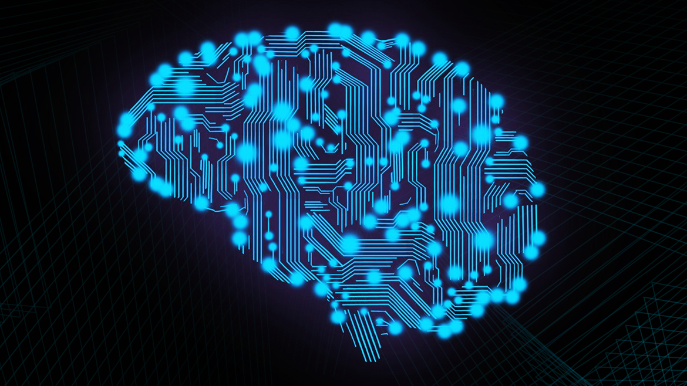

O que é Inteligência Artificial?
A Inteligência Artificial (IA) é uma tecnologia que existe desde os anos 50, ou seja, ela vem evoluindo há bastante tempo. O que a torna uma das tendências do e-commerce para 2023 é a versatilidade de suas aplicações e funcionalidades.
A IA é baseada em algoritmos de computação, estatística e aprendizado de máquina. Assim, seus sistemas são capazes de realizar tarefas cada vez mais complexas sem supervisão humana.
Além disso, o diferencial da IA é justamente permitir que máquinas imitem a inteligência humana para realizar essas tarefas, como aprender, entender linguagem natural, tomar decisões e solucionar problemas.
Qual é o principal objetivo da inteligência artificial nas empresas?
Os principais objetivos da inteligência artificial nas empresas são aumentar a eficiência, melhorar a tomada de decisão e se tornar mais competitivo no mercado.
Isso pode ser alcançado através da automação de tarefas manuais repetitivos, análise de dados em larga escala e otimização de processos de negócios.
Além disso, a IA também pode ser usada para melhorar a experiência do cliente, identificar novos mercados e oportunidades de negócios e personalizar a oferta de produtos e serviços.
Quais são as vantagens e desvantagens da inteligência artificial?
Por ser uma tecnologia ainda em evolução, os impactos da inteligência artificial, tanto positivos quanto negativos, ainda estão no campo da especulação. Destacamos os principais pontos de discussão sobre a tecnologia:
Quais são os tipos de Inteligência Artificial?
Inteligência Artificial Limitada (ANI)
A Inteligência Artificial Limitada se concentra em resolver um problema específico ou realizar uma tarefa de maneira eficiente. Isso quer dizer que ela não tem a capacidade de aprender ou se adaptar a novos ambientes.
É como um robô programado para fazer uma tarefa, como reconhecer vozes, mas sem a habilidade de evoluir com o tempo.
Imagine que você compra um assistente virtual para sua casa. Ele é projetado para ligar e desligar luzes, regular a temperatura e controlar o som. Contudo, ele não é capaz de aprender ou se adaptar a novos hábitos e preferências.
Em resumo, a Inteligência Artificial Limitada é uma abordagem mais simples e direcionada que não tenta simular a inteligência humana. Seu foco é realizar tarefas específicas de maneira eficiente.
Inteligência Artificial Geral (AGI)
Já a Inteligência Artificial Geral busca simular a inteligência humana. Isto é, ela permite que os sistemas de IA possam compreender e se adaptar a situações novas e complexas, aprender com a experiência e generalizar seu conhecimento para novos contextos.
Imagina contar com um robô que pode aprender e se adaptar a suas preferências e hábitos, ou mesmo entender conceitos abstratos como moral e ética. Esse robô seria capaz de resolver problemas complexos.
Por mais que a tecnologia venha evoluindo, um sistema totalmente capaz de simular a inteligência humana ainda não foi criado. Mas com certeza os programadores estão trabalhando nisso…
Superinteligência Artificial (ASI)
Já que estamos falando de IAs que ainda não existem, é hora da Superinteligência Artificial (ASI).
A tecnologia é uma hipótese futurista, que ultrapassa significativamente a inteligência humana em todas as dimensões relevantes, como conhecimento, habilidade de raciocínio, inteligência social e capacidade de autoconsciência.
Em outras palavras, a ASI seria capaz de resolver problemas e realizar tarefas de maneira significativamente mais eficiente e rápida do que as pessoas.
Alguns especialistas argumentam que a criação de uma superinteligência artificial pode trazer benefícios incríveis para a humanidade, mas também há preocupações quanto ao controle e à segurança da tecnologia.
Ferramentas de Inteligência Artificial
Existem muitos usos da inteligência artificial nas empresas. Para colocá-los em prática é necessário ter conhecimento de quais ferramentas podem ajudar e facilitar alguns processos.
As 7 principais aplicações de inteligência artificial nas empresas!
No mundo corporativo, as empresas recebem dados e informações a todo momento. Sejam de fornecedores, sejam de clientes, eles ficam disponíveis para análise. Saber extrair o que tem de mais valioso neles é um diferencial. Ferramentas que têm como base a inteligência artificial conseguem compilar dados de uma maneira bem mais eficiente do que uma pessoa faria.
Inteligência artificial é uma tecnologia com capacidade de realizar atividades no lugar dos seres humanos. São softwares e máquinas desenvolvidos para ter comportamento inteligente, ou seja, seu pensamento se aproxima do pensamento de um ser humano em razão de uma capacidade que faz parte do conceito de inteligência: o aprendizado.
Diferentemente de um software convencional, soluções que exploram a inteligência artificial conseguem “aprender” a melhorar o próprio serviço a que se destinam. Hoje em dia, é possível observar a implementação desses softwares em celulares, casas, carros, empresas etc.
Especificamente nas empresas, a inteligência artificial é utilizada como forma de potencializar os resultados, aumentar a produtividade e economizar tempo. Ela pode ser implementada em diversos setores para melhorar o desempenho de tarefas e ajudar os profissionais de gestão a mapear processos.
Pensando nisso, neste post, trazemos as 7 principais aplicações de inteligência artificial nas empresas. Acompanhe a leitura e confira!
Chatbots
Os chatbots utilizam a linguagem para conversar com as pessoas de maneira natural e pré-programada. Reconhecem nomes e números de telefones e reproduzem o comportamento humano.
Eles podem ser integrados a outras ferramentas e bancos de dados, automatizando rotinas simples de cadastro, atualização e consulta de informações. Essas integrações deixam os serviços mais rápidos, melhorando a experiência do cliente.
A CNH Industrial, uma empresa líder global de bens de capital, é um exemplo de empresa que investiu em uma solução de inteligência artificial com chatbots. A plataforma é responsável por atendimentos considerados simples. Houve redução de 10% no volume de ligações para o help desk e de 80% no tempo de resposta de abertura de chamados.
Aplicações de gestão
As aplicações de inteligência artificial para gestão são mais utilizadas em corporações. Elas são úteis para identificar quais colaboradores estão desempenhando as tarefas com mais eficiência.
Contar com esse tipo de ferramenta auxilia a tomada de decisão de gestores, pois eles têm informações precisas e confiáveis sobre os processos da empresa à sua disposição. Quando os dados são relevantes, fica mais fácil analisar quais ações estão dando certo e quais não.
Assistente pessoal
Utilizada para marcar reuniões, horários na agenda e atividades do cotidiano, a inteligência artificial como assistente pessoal vai muito além. Uma das mais conhecidas é a Siri, presente nos produtos da Apple. Ela reconhece comando de voz e é utilizada como um facilitador para diferentes funções cotidianas.
Em razão do aprendizado da máquina de inteligência artificial, esse tipo de software costuma ser constantemente atualizado. Com os dados de preferência, ele antecipa as solicitações com base na tendência de comportamento de cada pessoa, ou seja, a experiência do usuário tende sempre a melhorar.
Nas empresas, o assistente virtual pode ajudar a direcionar o usuário para o serviço que melhor se encaixa na sua necessidade, agilizando os processos para funcionários e prestadores de serviços. Um exemplo aplicado em empresas é a Aixa, assistente virtual da Caixa Econômica Federal, que ajudou o banco a se tornar referência em atendimento virtual no Brasil.
Mecanismos de segurança
A inteligência artificial também pode ser desenvolvida como mecanismo de segurança tanto em ataques digitais quanto em situações do cotidiano, como eventos.
Na parte digital, o exemplo mais comum é o internet banking. Um serviço de inteligência artificial vinculado aos servidores que hospedam os serviços que compõem o site pode identificar tentativas de ataques com mais rapidez que um humano. Ele também consegue analisar novas modalidades de ataques que foram bem-sucedidos e criar formas de neutralização para evitar novas ocorrências.
Já no mundo físico, podemos utilizar como exemplo a interpretação de câmeras de trânsito, a fim de ajudar as entidades que gerenciam o tráfego a tomar decisões que melhorem o fluxo de veículos nas vias. Serviços de reconhecimento facial também usam inteligência artificial, então também podemos dizer que a IA é capaz de auxiliar no rastreamento de criminosos com a análise de imagens de câmeras de segurança.
Predições
As máquinas equipadas com inteligência artificial nas empresas podem ser desenvolvidas para fazer previsões do comportamento humano em determinadas circunstâncias. Essa tecnologia pode ser utilizada em campanhas de marketing, por exemplo, para prever diferentes cenários e possíveis resultados.
A partir dos dados captados, o gestor terá mais informação à sua disposição para determinar os caminhos que a empresa deve seguir de acordo com o resultado esperado da estratégia. A previsão do tempo foi um dos primeiros aspectos em que a inteligência artificial auxiliou a humanidade, por meio do supercomputador Watson, da IBM.
Vendas e marketing
Uma das principais vantagens em se utilizar inteligência artificial nas empresas é proporcionar um atendimento de melhor qualidade ao cliente. A personalização do atendimento ao consumidor disponibiliza praticidade e conforto.
O machine learning é uma aplicação em que o sistema aprende a agir por sua conta sem ter que ser programado para a nova função. Com base em seus próprios dados coletados, o programa vai se adaptando.
Ensino
No Brasil e no mundo, a educação vem se transformando cada vez mais. A forma como os conteúdos são passados pelo professor nem sempre geram os resultados esperados. Crescentemente, o ensino tem demandado uma maior interação entre alunos e professores dentro de sala de aula como forma de potencializá-lo.
Uma proposta bem interessante é utilizar a tecnologia da computação como professor. Nesse caso, ela atua como um professor que está disponível para os alunos 24 horas por dia. Ele pode ser consultado em qualquer horário e oferece um ensino personalizado e de qualidade.
Implementar a inteligência artificial nas empresas pode potencializar os resultados, deixar os processos mais ágeis e ajudar a reduzir gastos operacionais. Além das vantagens, a experiência do usuário é aprimorada, de maneira que os dados são muito mais acessíveis e corretos. Os relatórios gerados são mais próximos da realidade, ajudando a criar insights que melhorem o processo final.
Preparar uma empresa para utilizar inteligência artificial exige planejamento. Por isso, conte com nossa parceria para vislumbrar e implementar processos relacionados à inteligência artificial e transformação digital.

Exemplos de Inteligência Artificial nas empresas
A inteligência artificial nas empresas inclui chatbots para atendimento ao cliente, análise de dados, recomendações personalizadas baseadas em comportamento, reconhecimento de voz e imagem, e robótica para automatização de tarefas.
A aplicação da IA está se expandindo rapidamente em diversas áreas empresariais. Confira como ela pode ser aplicada em duas áreas de interesse: no marketing e nas vendas.
Inteligência Artificial no Marketing
A inteligência artificial pode ser utilizada no marketing para diversas aplicações, auxiliando na identificação de padrões, tendências de comportamento, sentimento em relação à marca e preferências do consumidor.
As campanhas de tráfego pago, por exemplo, podem se beneficiar dos algoritmos para segmentar o público-alvo em grupos distintos. Isso pode ser feito com base em características demográficas, comportamento e preferências. Vai ser ideal para personalizar e otimizar mensagens de e-mail e melhorar a taxa de conversão.
E tudo fica mais fácil com sistemas de geração de conteúdo que criam textos, títulos e descrições de produtos automaticamente com base em padrões e tendências. Já a análise em tempo real de dados de mídia social avalia o impacto das campanhas de marketing.
Em resumo, a inteligência artificial no marketing pode te ajudar a fazer:
Inteligência Artificial para Vendas
Com a inteligência artificial para vendas, você pode prever vendas futuras com base em dados históricos e tendências de mercado. Além disso, os algoritmos de aprendizado de máquina podem prever a probabilidade de um cliente cancelar ou interromper seu relacionamento com a empresa.
Você também tem acesso a sistemas automatizados que geram relatórios de vendas em tempo real. Eles podem ajudar a tomar decisões informadas, identificando oportunidades de venda adicional de produtos ou serviços complementares.
Além disso, com a inteligência artificial, você pode contar com chatbots e oferecer uma interação automatizada com os clientes. Dessa forma, você responde a perguntas e guia a jornada de compra.
Recapitulando, a inteligência artificial para vendas pode te ajudar na:
Como utilizar a inteligência artificial para E-commerce?
As aplicações da Inteligência Artificial nas empresas são diversas, sempre visando melhorar a experiência de compra do cliente e facilitar os processos do empreendedor.
Com a utilização da tecnologia, processos demorados e onerosos agora podem ser simplificados e automatizados. Esse movimento leva a uma melhora na produtividade e, consequentemente, nos lucros.
Só coisa boa, não é? Por isso, destacamos as principais maneiras em que a Inteligência Artificial para E-Commerce pode te ajudar a sair na frente em 2023.
Recomendação de produtos
Os sistemas de recomendação de produtos já são bastante conhecidos pelo público dos streaming e das redes sociais. Eles são também ótimos exemplos do uso da inteligência artificial para o e-commerce.
A tecnologia é baseada em algoritmos de machine learning que analisam dados sobre os comportamentos de compra dos usuários. Essa análise pode incluir histórico de compras, pesquisas e itens visualizados.
A partir dessa análise, o sistema cria modelos de preferências e interesses dos usuários, recomendando produtos a partir dessas características.
O algoritmo também pode levar em conta informações sobre o produto, como popularidade, avaliações e recomendações de outros usuários, para aprimorar suas recomendações.
Dessa forma, é possível fornecer sugestões precisas e relevantes para cada usuário, aumentando as chances de conversão e satisfação do cliente.
Além disso, essa inteligência artificial nas empresas permite aos e-commerces obter insights valiosos sobre seus clientes para melhorar a eficiência de suas estratégias de marketing.
Chatbots
Uma das principais aplicações da Inteligência Artificial nas empresas é o uso de chatbots para tornar a comunicação com o cliente mais rápida e eficiente.
Os chatbots são programados usando algoritmos de inteligência artificial para responder às perguntas dos visitantes de maneira precisa. De acordo com pesquisa da Cedro Technologies, 90% dos processos de rotina podem ser resolvidos pela tecnologia.
O cliente inicia a interação com o chatbot, que utiliza a IA e algoritmos para identificar a intenção da pergunta. Com o propósito definido, começa a busca pela resposta na base de dados da loja virtual.
Um chatbot pode responder perguntas sobre produtos, ajudar a navegar pela loja virtual, encontrar informações logísticas sobre pedidos e trocas e muito mais.
O objetivo final da ferramenta é fornecer ao cliente informações relevantes e ajudá-lo a realizar compras com mais eficiência e comodidade. Além, é claro, de oferecer uma experiência de atendimento personalizada.
Busca Inteligente
Os grandes motores de busca disponíveis no mercado utilizam modelos de aprendizado baseados na inteligência artificial. E sua Loja Virtual também pode utilizar a mesma tecnologia.
A busca inteligente conta com uma tecnologia de inteligência artificial para E-commerce capaz de entender a intenção do consumidor. Dessa maneira, a ferramenta retorna resultados mais precisos e rápidos.
Os tipos de busca inteligente incluem:
Personalização de experiência
Outra grande aplicação da Inteligência Artificial nas empresas de E-commerce é a personalização dos serviços oferecidos, tornando a experiência de compra única para cada cliente.
A IA é capaz de analisar os dados de compra e oferecer recomendações personalizadas com base nessas informações.
De acordo com o Consumer Trends 2023, 72% do público espera que as empresas saibam identificar seus interesses e ofereça produtos e serviços compatíveis.
A personalização da experiência inclui a retenção de itens no carrinho entre acessos, sugestão de produtos baseada em localização e faixa etária, envio de e-mails de remarketing em casos de carrinho abandonado e mais.
Criação de textos e imagens
A inteligência artificial nas empresas também pode ser aplicada em um contexto mais criativo no seu e-commerce.
Com a ajuda de algumas aplicações como o ChatGPT, é possível descobrir quais os melhores títulos, descrições e palavras-chaves para produtos. Isso tudo já otimizado para SEO e validado pela análise de dados da ferramenta.
As imagens da sua loja virtual também podem ser aperfeiçoadas pela IA. Ferramentas como o Midjourney são capazes de criar banners, mockups de produtos e similares, tudo isso a partir de comandos textuais.
Ainda no tópico visual, aplicações como o Watermark Remover e o ClipDrop podem otimizar suas fotos, deixando-as mais atrativas para seus clientes.

Inteligência Artificial na Gestão Pública: O que, por quê e como?
30 toneladas, 180 metros quadrados e 18 mil válvulas. Assim era o primeiro computador desenvolvido pela humanidade, em meados dos anos 40. A partir de então, em apenas algumas décadas, os avanços científicos revolucionaram nossas vidas de maneira antes inimaginável, proporcionando acesso a tecnologias como celulares, notebooks, internet, e assim adiante.
Foi neste contexto que um campo da ciência, em especial, ganhou grande destaque: a ciência de dados. Inicialmente utilizada para resolver problemas simples, a capacidade de analisar dados tornou-se cada vez mais robusta e se espalhou por diversos ramos da sociedade. Seja na área da saúde, no sistema bancário, no setor de entretenimento, e até mesmo na indústria automotiva, a ciência de dados – mais especificamente a Inteligência Artificial (IA), passou a protagonizar radicais transformações. Não por acaso o campo é considerado uma das mais promissoras apostas para o avanço do século XXI, sendo pilar central das organizações mais valiosas do mundo como Amazon, Apple, Google e Microsoft
Mas afinal de contas… O que tudo isso tem a ver com a administração pública? Antes de explicar os motivos, o funcionamento e os desafios da aplicação de Inteligência Artificial na Gestão Pública, vamos conhecer alguns casos reais!
Casos Reais: Utilização de Inteligência Artificial na Gestão Pública
Em 2018, o Departamento de Bombeiros da cidade de Pittsburgh (Pensilvânia – EUA), passou a contar com um sistema de Inteligência Artificial voltado para a detecção de incêndios. Desenvolvido em parceria com a Carnegie Mellon University, o programa utiliza um conjunto de dados históricos para calcular a propensão de ocorrer um incêndio em cada edificação da cidade. Com base no resultado, as inspeções de segurança do departamento são priorizadas, e segundo o levantamento da universidade, o modelo teve sucesso em prever em torno de 70% dos incidentes.
Desde 2017, o Tribunal de Contas de União (TCU) desenvolve ferramentas baseadas em Inteligência Artificial para apoiar suas atividades de fiscalização e controle externo. Talvez em uma das mais clássicas aplicações de IA, o TCU utiliza suas ferramentas sobretudo nas buscas por fraudes e irregularidades no gasto dos recursos públicos. Isso envolve a análise diária de centenas de editais, do Diário Oficial da União, do Portal Comprasnet, entre outros. Todos os dados coletados são organizados e devidamente processados nos algoritmos, retornando aos gestores indicações de possíveis irregularidades. Uma peculiar curiosidade consiste no fato de todos os sistemas até então desenvolvidos, receberem nomes de pessoas. Confira alguns!
Em 2020, o Serviço Social Autônomo ParanáCidade – vinculado ao governo estadual, lançou um aplicativo voltado para facilitar a análise de documentos enviados pelas prefeituras que solicitam recursos para projetos de desenvolvimento urbano. A ferramenta, denominada GurlA, baseia-se em algoritmos de Inteligência Artificial que analisam e classificam os arquivos recebidos, comparando-os com bases de dados externas e avaliando se estão em conformidade com as exigências legais. Os municípios pleiteantes ainda recebem um retorno com a indicação das eventuais inconsistências ou ausências na documentação submetida. Além de agilizar o processo para as prefeituras, o aplicativo facilita o processo por parte do governo estadual, uma vez que tal atividade envolveria uma numerosa equipe de técnicos caso fosse conduzida manualmente. Você pode conferir aqui maiores detalhes sobre a iniciativa!
O que exatamente é Inteligência Artificial?
Como vimos, as aplicações da IA podem ser bastante diversas, e os algoritmos bastante complexos. O conceito por de trás, entretanto, é simples: a tentativa de simular o raciocínio humano por meio da computação. Para tanto, os algoritmos analisam grandes bases de dados e tomam decisões em função de regras e definições estabelecidas, “acumulando o conhecimento” no processo
Os primeiros registros relacionados ao campo da Inteligência Artificial foram identificados nos anos 50, quando os cientistas norte-americanos Allen Newell e Herbert Simon iniciaram estudos no laboratório da Universidade de Carnegie Mellon. Ao longo dos anos, o tema evoluiu tanto no âmbito prático quanto no âmbito acadêmico, sendo objeto de estudo de especialistas de todo o mundo. O tema ganhou muito protagonismo no século XXI, sendo considerado a aposta de diversas empresas e até mesmo de governos.
Cabe ainda apontar que o conceito de Inteligência Artificial está diretamente relacionado ao campo da Ciência de Dados. Apesar de não serem exatamente o mesmo objeto, pode-se considerar que a IA faz parte da Ciência de Dados. Além disso, existem diversos subcampos na IA, como Machine Learning, Deep Learning, PLN, entre outros. Caso se interesse pelo tema, confira este artigo para se aprofundar!
Por que governos devem utilizar Inteligência Artificial?
Os motivos para utilizar a Inteligência Artificial na Gestão Pública são diversos. Seja para otimizar um processo, prever incidentes, identificar fraudes, automatizar uma tarefa ou até para desenvolver um serviço. As possibilidades são numerosas, e a pertinência de cada uma delas irá variar de acordo com as condições e necessidades de cada realidade. Dentre os campos de aplicação, alguns recebem maior destaque e são considerados promissores, chamando a atenção dos gestores públicos. Dentre eles está o campo da saúde, com diversas aplicações relacionadas a automatização de diagnósticos; a automação de processos, com aplicações em setores como o de compras públicas; e o campo da interação com o cidadão, existindo experiências exitosas com chatbots nas mais diversas áreas.
É importante destacar, todavia, que a Inteligência Artificial na Gestão Pública nada mais é do que uma ferramenta que pode ser utilizada para alcançar determinados objetivos. Longe de ser uma panaceia, essa ferramenta exige que se tenha claro quais os problemas que a organização quer resolver, que se conte com uma equipe capacitada para desenvolver os algoritmos, e que se implemente as soluções na prática.
Como utilizar Inteligência Artificial na Gestão Pública?
Bom, já entendemos o conceito e a relevância desse tema para a administração pública. Mas como efetivamente desenvolver e implementar algoritmos de Inteligência Artificial na Gestão Pública, em especial nas prefeituras? Como resposta, podem ser apontados três principais caminhos.
A primeira alternativa para a utilização de IA em governos consiste no desenvolvimento de capacidades internas, ou seja, no treinamento ou na contratação de servidores especializados para comporem uma equipe interna. Uma prefeitura, por exemplo, pode abrir concursos para vagas de engenheiro ou engenheira de dados, cientista de dados e programadores na Secretaria de Inovação de Tecnologia, criando uma equipe responsável por apoiar na resolução de problemas via Inteligência Artificial. No caso de grandes capitais, ou de governos estaduais/federal, é comum a existência de empresas públicas especializadas em análise e processamento de dados, tais como a SERPRO, PRODESP e PRODAM/SP.
Nem sempre, todavia, a opção de uma equipe interna será viável ou suficiente. Prefeituras pequenas podem enfrentar barreiras tanto na alocação de recursos para contratação, quanto na oferta de mão-de-obra qualificada. Além disso, organizações que já contam com equipes ou departamentos de análises de dados podem necessitar alternativas diante de sobrecarga de trabalho ou falta de conhecimento técnico específico. Nesse sentido, os dois próximos caminhos podem ser pertinentes.
Assim como ocorreu na cidade de Pittsburgh, descrita no Caso 1, prefeituras brasileiras também podem concretizar parcerias para o desenvolvimento de soluções embasadas em Inteligência Artificial. Sejam universidades, empresas juniores ou centros de pesquisa, acordos entre o poder público e demais organizações dispostas a cooperar podem viabilizar projetos e iniciativas. Os formatos para concretizar esse tipo de parceria são diversos, mas uma opção em específico tem ganhado destaque: os desafios. A proposta deste formato consiste na organização de uma competição que incentiva alunos, universidades ou startups a fornecerem soluções para um problema específico que o órgão governamental enfrenta. Os vencedores podem receber algum tipo de incentivo financeiro e reconhecimento público, além de ter a possibilidade de implementar sua solução. Apesar de não ser restrita a um tema específico, essa modalidade de parceria pode ser aplicada para desafios relacionados à Inteligência Artificial.
Por fim, a terceira alternativa consiste na contratação direta. Como qualquer outro tipo de serviço, as prefeituras podem contratar empresas especializadas para apoiar em demandas relacionadas à ciência de dados. Nesta alternativa, é importante que o poder público se atente às regras de privacidade e propriedade nos contratos, assegurando que não haja nenhum tipo de violação dos direitos digitais da população, e que não se estabeleça uma relação de dependência obrigatória para com a empresa contratada (lock-in costs).
As três alternativas mencionadas não são mutuamente excludentes, podendo ser complementares em diversas situações. Todavia, há um aspecto que está por detrás de qualquer caminho, independentemente do tema, escopo, área ou ramo da aplicação: a coleta e organização dos dados. A qualidade de um modelo de Inteligência Artificial está diretamente relacionada com a quantidade e com a qualidade dos dados disponíveis. Para garantir que se tenha insumos suficientes que permitam a elaboração de bons modelos, é imprescindível a estruturação de uma consistente e sólida governança de dados.
Inteligência Artificial na Gestão Pública: uma poderosa ferramenta
Se o século XXI trouxe inúmeras inovações, tecnologias e avanços científicos, também trouxe problemas cada vez mais complexos. Assim como no setor privado, governos do Brasil e do mundo necessitam recorrer a ferramentas cada vez mais robustas e capazes de lidar com as demandas da população. Nesse contexto, a Inteligência Artificial se apresenta como um pertinente e poderoso instrumento para potencializar os esforços públicos no cumprimento de seu papel fundamental, a geração de valor público.

Inteligência Artificial nas empresas: como usar a tecnologia ao seu favor!
Um dos assuntos mais falados é o uso da inteligência artificial nas empresas. Mas afinal, quais são as aplicações dessa tecnologia no E-commerce?
Você já deve ter notado a variedade de usos da inteligência artificial para aumentar as vendas online. Inclusive, a sua Loja Virtual provavelmente emprega esta tecnologia diariamente para facilitar processos e ações.
Isso porque a inteligência artificial (IA) está no centro da transformação, desempenhando um papel fundamental em diversos setores. Podemos citar a melhoria da experiência do consumidor, a segurança dos pagamentos e oferecendo insights valiosos para a tomada de decisão.
Então, continue lendo este artigo até o final e fique por dentro de todos os pontos mais importantes sobre inteligência artificial nas empresas!
Onde se usa a Inteligência Artificial nas empresas?
A inteligência artificial nas empresas pode ser aplicada para:
Inteligência Artificial: confiança e confiabilidade dos dados
A Inteligência Artificial (IA) é um ramo da ciência de computação que tem como foco elaborar dispositivos capazes de simular o raciocínio humano, particularmente a capacidade de aprendizado.
IA: mecanismos que facilitam as tarefas operacionais
Quando utilizada adequadamente, ela pode ser muito benéfica, criando mecanismos para facilitar nossas tarefas, em especial no ambiente de trabalho. A principal vantagem da IA é a capacidade de processamento de grande volume de informações em pouquíssimo tempo. Um simples sistema anti-phishing (que faz varredura de páginas da internet fraudulentas, aquelas capazes de roubar dados de usuários), pode rastrear bilhões (isso mesmo, bilhões) de páginas por dia. É um exemplo no qual a IA se mostra muito necessária, afinal seria impossível um ser humano realizar o mesmo trabalho.
No Brasil, o governo tem avançado para regular o uso da IA. O Ministério de Ciência, Tecnologia, Informações e Comunicações abriu uma consulta pública para definir a chamada Estratégia Nacional de Inteligência Artificial, cujo objetivo é debater formas de potencializar os benefícios da tecnologia e mitigar seus impactos negativos. A medida foi tomada logo depois de o Brasil aderir – juntamente a outros 41 países – às recomendações da OCDE [FL1] (Organização para a Cooperação e Desenvolvimento Econômico), que anunciou uma série de princípios para o desenvolvimento da IA.
O principal deles é que “a inteligência artificial deve beneficiar as pessoas e o planeta para crescimento inclusivo, desenvolvimento sustentável e bem-estar”. O documento também reitera que a tecnologia respeite as leis, direitos humanos e valores democráticos.
A Inteligência Artificial no Sistema de Gestão
A questão é que a IA ainda levanta uma série de desconfianças, principalmente no que diz respeito à segurança dos dados e sobre a confiabilidade das informações geradas pelas máquinas, já que elas não são capazes de fazer a mesma distinção sensível tal qual um ser humano. Quando aplicada nos Sistemas de Gestão, a Inteligência Artificial pode ser muito interessante.
Os softwares de processamento de requisitos legais, por exemplo, são muito úteis. Se você é dono ou gestor de uma empresa, sabe que precisa seguir uma quantidade imensa de leis para estar em dia com suas obrigações legais. Muitas vezes, gerenciar o cumprimento dessas leis pode ser complicado, não apenas pelo volume de informação, mas também pela necessidade de interpretação dos dados.
Quando você dispõe de um programa de IA para processar esses dados, a tarefa fica muito mais fácil. Um software como o SOGI da Verde Ghaia, por exemplo, é capaz de registrar milhares de informações e cruzá-las com os dados fornecidos pela sua empresa, apontando assim aquelas que são pertinentes ao seu negócio. É um trabalho que, se executado por humanos, seria cansativo, demorado e complicado de se gerir.
Por que algumas empresas consideram a IA um problema para o Sistema de Gestão?
Na gestão de pessoas, por exemplo, embora a IA também possa ser bastante útil nesse aspecto, ela ainda não substitui a sensibilidade humana. Um exemplo: você precisa contratar um novo funcionário para seu setor de manutenção. Você pode recorrer a um software para fazer a triagem de currículos e organizar o cadastro dos candidatos. Pode até mesmo selecionar os melhores com base em informações técnicas. Mas a máquina dificilmente vai conseguir captar as sutilezas que uma pessoa captaria numa entrevista cara a cara. Nesse ponto, a IA ainda é incapaz de substituir a inteligência humana.
Por que a IA melhora a Segurança de dados?
Mas, e os meus dados (e consequentemente os dados da minha empresa)? Eles estarão protegidos? Bem um sistema de Inteligência Artificial depende da obtenção de dados para funcionar. E obviamente, quanto mais dados este sistema receber, mais precisas serão as informações fornecidas. Por conta disso, vários governantes têm tentado interferir para não macular a privacidade das pessoas. Por isso, temos leis bem regulamentadas que asseguram os dados dos clientes das organizações.
No Brasil, já entrou em vigor a Lei Geral de Proteção de Dados Pessoais (LGPDP) – Lei nº 13.709 de 14 de agosto de 2018. A previsão de vigência total é para agosto de 2020. De qualquer forma, mesmo sem estar completamente vigorante, ela já chancela e direciona a proteção de dados pessoais, com dez capítulos e 65 artigos determinando como dados pessoais podem ser coletados e tratados no Brasil, especialmente no que diz respeito aos meios digitais (porém não limitados a eles).
Ela abrange principalmente os “dados pessoais”, que neste caso são definidos como “uma informação relacionada à pessoa natural identificada ou identificável”. Ou seja: são aquelas informações que, isoladas ou em conjunto, são capazes de levar à identificação de um indivíduo. Exemplos: nome, apelido, endereço residencial, endereço de e-mail, endereço de IP, fotografias, formulários cadastrais, números de documentos etc.
A Inteligência Artificial vai roubar meu emprego?
No caso dos empregos, é inevitável que algumas funções sejam extintas ou modificadas ao longo dos anos. Mas se você parar para pensar, isso é perfeitamente normal num cenário de evolução. Basta pensar que não temos mais acendedores de postes de iluminação pública ou telegrafistas.
No caso da IA, a aposta é muito mais na evolução pura e simples de cargos do que no desaparecimento deles. Sabendo fazer uso da Inteligência Artificial, o profissional terá seu trabalho facilitado e vai poder processar mais informações e aproveitar os dados coletados de maneira muito mais interessante. O segredo é não se acomodar e buscar conhecer as novas tecnologias.
A IA é um grande facilitador nos processos de logística, por exemplo, pois calcula rotas de maneira muito mais eficaz, ou na identificação de pendências num Sistema de Gestão. Na prática isso pode representar a redução da força de trabalho e um consequente reequilíbrio entre a vida pessoal e profissional dos funcionários, aumentando a qualidade de vida.